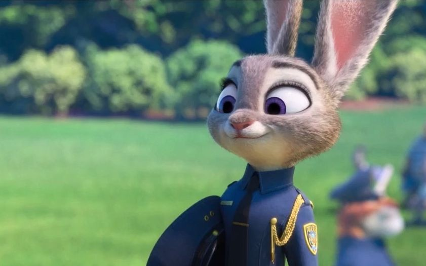
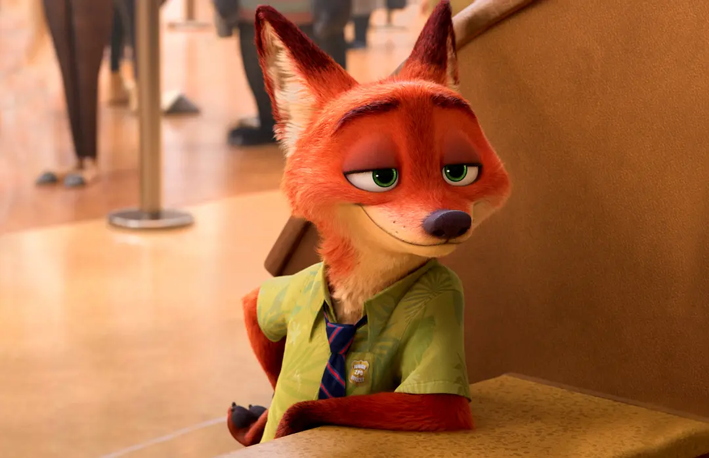
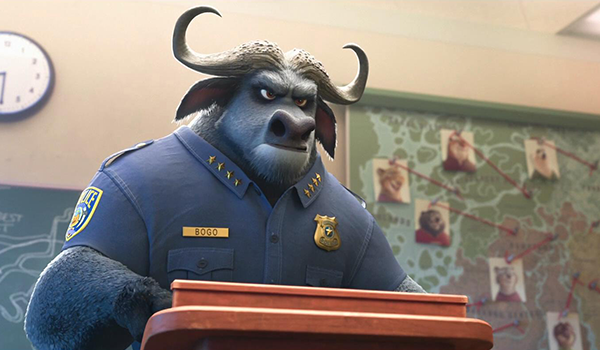
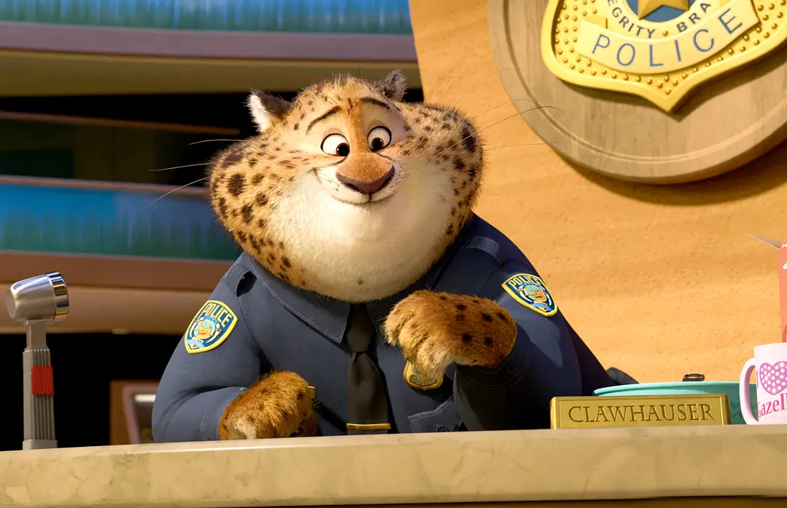

人物介绍
影片故事发生在欣欣向荣的动物乌托邦，在这里各种动物和平共处。尼克·王尔德是只说话速度特别溜、有着宏图理想的狐狸，然而他却被栽赃嫁祸，不得不踏上亡命之旅，兔警官朱迪上尉负责追捕他。当两人同时卷入意想不到的阴谋时，他们不得不联手合作成为战友。
- 
朱迪警察局里通过自己的奋斗成为现代动物都市的第一个兔子警官。警察局的同僚总是瞧不起她，为了证明自己，她从野牛警察局长手中抢到了一个失踪案，凭借过人胆识发现了案件背后的阴谋，然后迫使狐狸尼克与自己踏上了冒险旅程。
- 
尼克一只在动物城里以坑蒙拐骗为生的狐狸，儿时受到歧视与偏见伤害，放弃了自己的理想。被朱迪设下圈套，被迫与她合作查案，而卷入意想不到的阴谋。 尽管困难重重，这两个天生的敌人在一个团队里一起奋战，最终破获了一个更大的谜团！
- 
牛局长（非洲水牛）动物城警察局第一分局局长，脾气暴躁难惹的非洲水牛，很关心这所警局。博戈勉为其难地让朱迪加入警察队伍，似乎一直在阻扰朱迪的警官梦。
- 
本杰明警官（猎豹）动物城警察局里的前台招待，本杰明只爱两件事物——超级明星瞪羚和面包圈。在接待桌前，它总是对每个人报以热情的微笑。